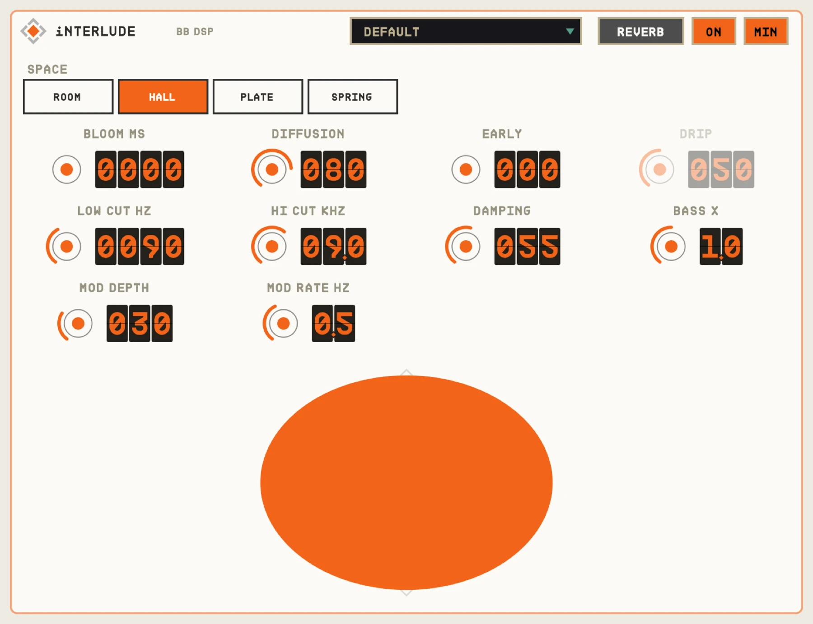
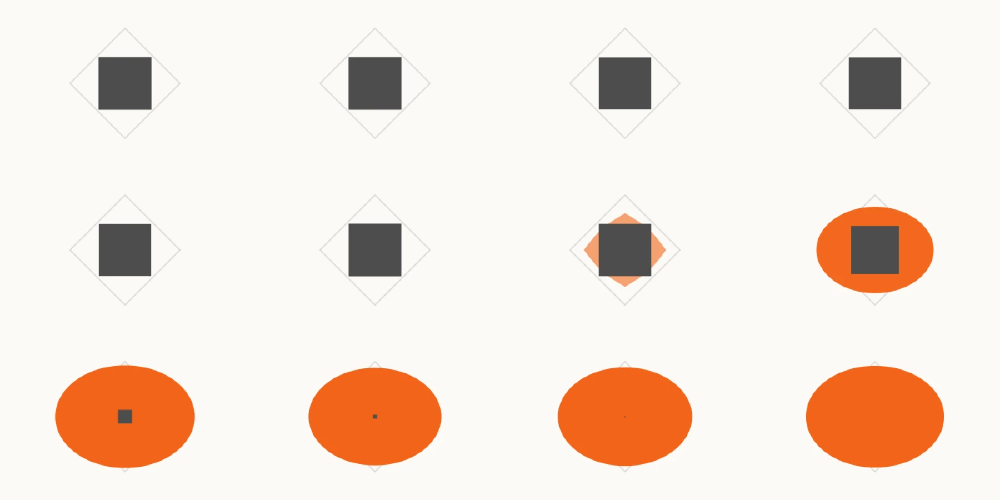

OVERVIEW
iNTERLUDE ducks its own reverb under your playing, but looks half a second ahead. That means it can start rising before a phrase ends instead of popping on after, and fall away just before the next phrase starts. Vocals and leads stay dry and clear; the space blooms in the gaps.


QUICK START
- 01Insert iNTERLUDE on a vocal or lead.
- 02Set THRESHOLD so phrases count as playing and gaps as quiet.
- 03GAP sets how long a silence must be to count.
- 04RISE sets how early the reverb starts coming up.
HOW IT WORKS
500 ms lookahead
iNTERLUDE reports a fixed 500 ms latency, which your host compensates. RISE and GAP share that window.
RISE dims
If RISE + GAP don't fit in the lookahead, RISE is shortened and its knob dims to show it.
Five spaces
ROOM, HALL and PLATE are dense reverbs; SPRING is a dripping two-spring tank.
CONTROLS
Values in the dark wells are the defaults.
MAIN
THRESHOLD-70 to 0 dB
-40
Level that counts as playing.
GAP50-450 ms
250
How long quiet must last to count as a gap.
RISE10-450 ms
180
How early before the phrase ends the reverb starts coming up.
ATTACK10-3000 ms
400
How long the fade-in lasts; it can run on into the gap.
FALL5-450 ms
80
How fast it ducks before the next phrase.
DUCK0-100%
100
How far the reverb is pushed down while you play.
BLOOM0-1500 ms
0
Makes the reverb swell after each sound.
MIX / VOLUME% / dB
50 / 0
Wet level and output.
REVERB PAGE
SPACEROOM / HALL / PLATE / SPRING
HALL
The reverb type.
DECAY, SIZE, PREDELAY
4 s
Length and size of the space.
DAMPING, DIFFUSION, EARLY0-100%
How the space sounds.
MOD DEPTH / MOD RATE% / 0.1-5 Hz
30 / 0.8
Gentle movement in the tail.
LOW CUT / HIGH CUTHz / kHz
150 / 6
Tone of the wet signal.
BASS DECAY0.5-2x
1x
How long lows ring compared with highs.
DRIP0-100%
50
Spring only: the splashy drip.
TIPS
- Long DECAY with DUCK at 100% gives huge spaces that never wash out the words.
- SPRING with high DRIP is a surf-guitar gap fill.
SPECS
- TYPE
- Audio effect (AU aufx), VST3, Standalone
- LATENCY
- 500 ms (reported)
- OUTPUT
- Stereo